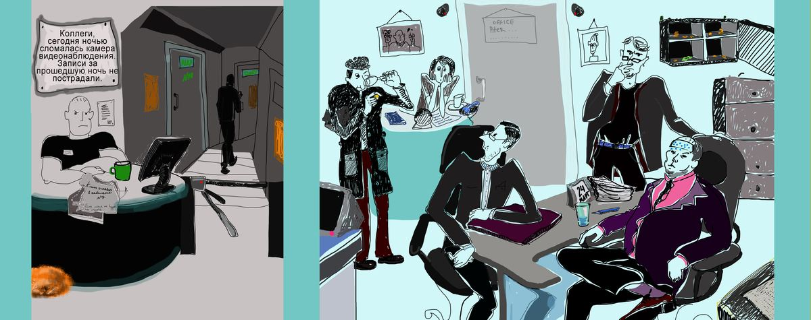

История
Был вскрыт сейф, сигнализация не сработала. Доступ к отключению сигнализации утром имеет только Алекс. Поэтому если сигнализация работала и преступление произошло не ночью, то Алекс преступник. Брюс всегда включает сигнализацию, когда уходит с работы, в отличие от остальных - остальные постоянно забывают это делать. Вчера на работе были Карл, Дилан и Брюс Сегодня утром на работу пришли Алекс, Карл и Дилан Вчера было чётное число, по чётным числам Брюс уезжает раньше всех в типографию. По нечетным происходит наоборот.Ночью камеры не работали и сейф не контролировался. Если Карл ушёл последним и пришёл утром, то он преступник Если Брюс ушёл последним и преступление произошло ночью, то он преступник.Если Дилан ушёл последним и пришёл утром, то он преступник.
Алекс - преступник
Брюс - преступник
Карл - преступник
Дилан - преступник
Брюс ушёл из офиса последним
Карл ушёл из офиса последним
Дилан ушёл из офиса последним
преступление произошло ночью
Алекс пришёл на работу утром
Карл пришёл на работу утром
Дилан пришёл на работу утром
сигнализация работала
Логические выражения
Окно доказательств